Itami, Hyogo: things to do, food and stays
Itami · Hyogo
Itami
Highlighted on the Hyogo map.
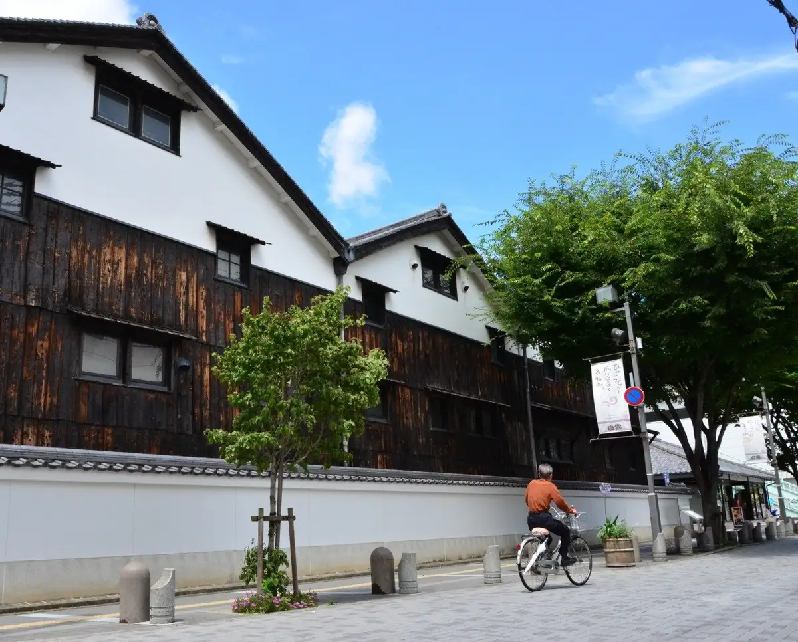
Stay
ホテル伊丹
Hotel Itami
Hotel in Fujinoki, Itami with parking and business travelers.
Dining
がふうあん
Gafuan
PATISSERIE LACROIX
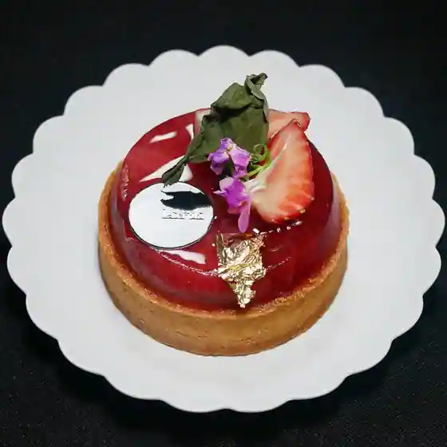
PATISSERIE LACROIX
Clutch Hitter
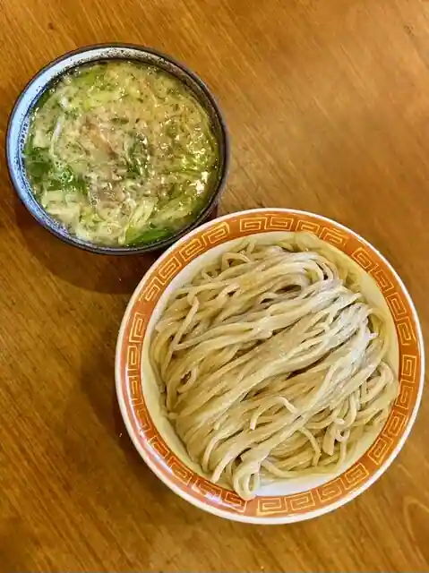
Clutch Hitter
千舟屋
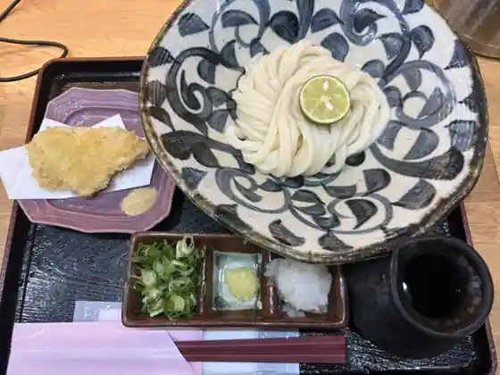
Chifune Ya
グリム
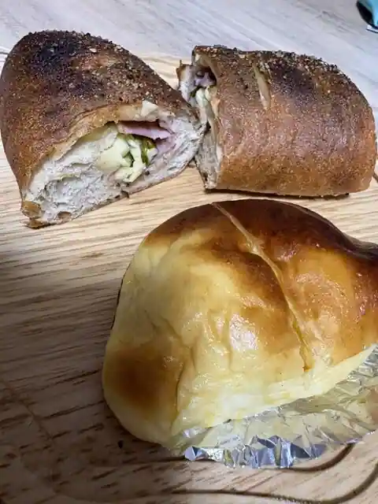
Gurimu
米処 神米
Kome Tokoro Shinmai
やきとり鳥源
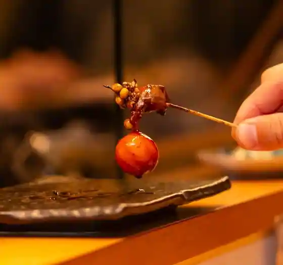
Yakitori Tori Gen
泡 家系ラーメン 薩摩家 伊丹店
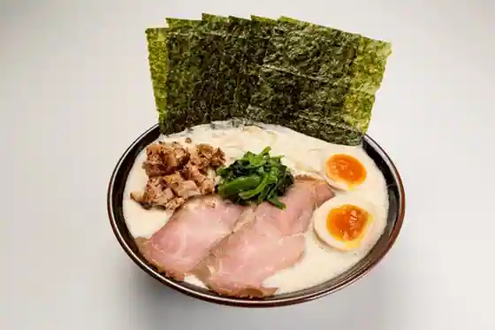
Awa Kakei Ramen Satsuma Ie Itami
焼肉ホルモン髙木
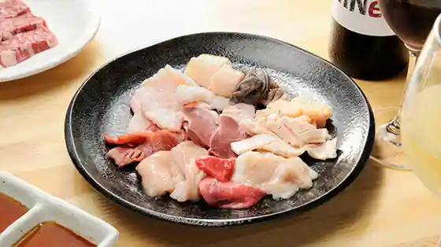
Yakiniku Horumon Takagi
Pasta&Pizzeria Creo
Pasta&Pizzeria Creo
大阪王 伊丹店
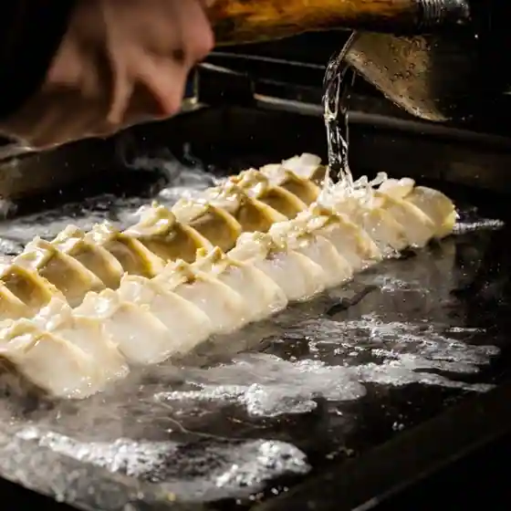
Osaka O Itami
メンヤ コトホギ
Menya Kotohogi
ラーメン さくらまる 伊丹店
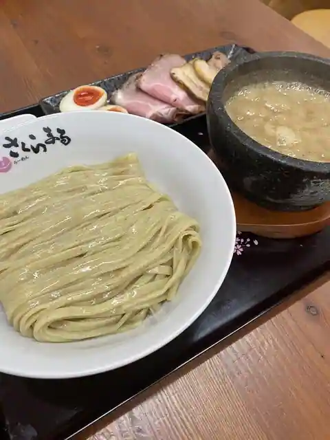
Ramen Sakuramaru Itami
厳選和牛と季節料理 eio
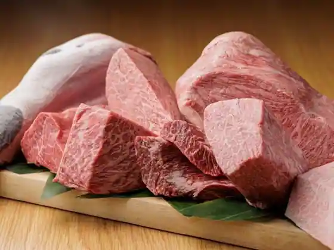
Gensen Wagyu To Kisetsu Ryori eio
鶏白湯そば 松もと
Niwatori Sayu Soba Matsu Moto
ピッツェリア ヒロ
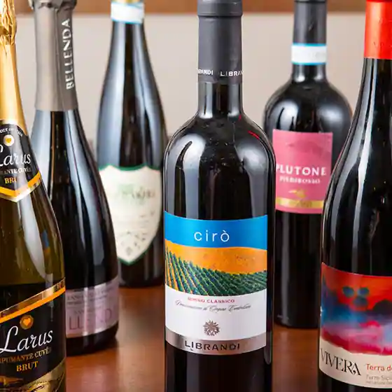
Pizzeria Hiro
十割そばと酒肴 しおさき
Ju Wari Sobato Shuko Shiosaki
麺屋 巧
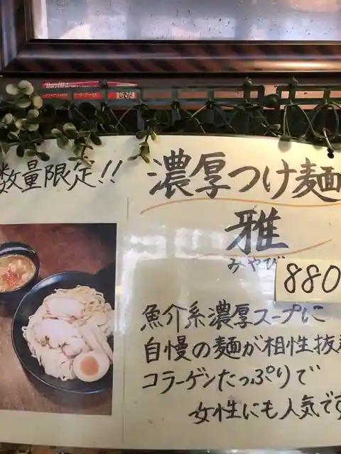
Men Ya Ko
どらやき キツネイロ
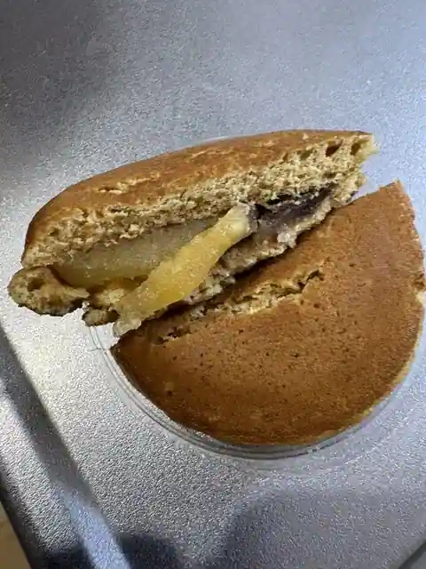
Dorayaki Kitsuneiro
中華 こまめや
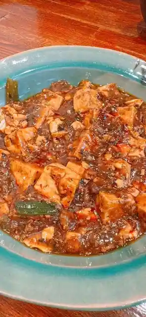
Chuka Komameya
十一
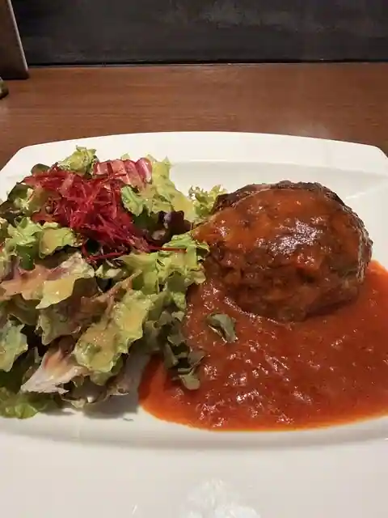
Juichi
麺道 しゅはり 伊丹店
Mendo Shuhari Itami
ジャンク
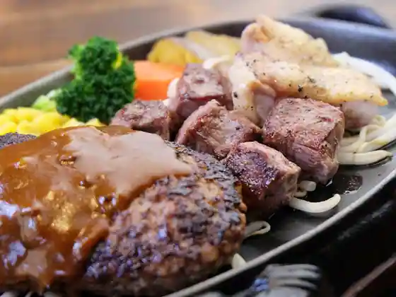
Janku
白雪ブルワリーレストラン長寿蔵
Shirayuki Buruwari Restaurant Choju Kura
Sights
Itami Shuzo Tori